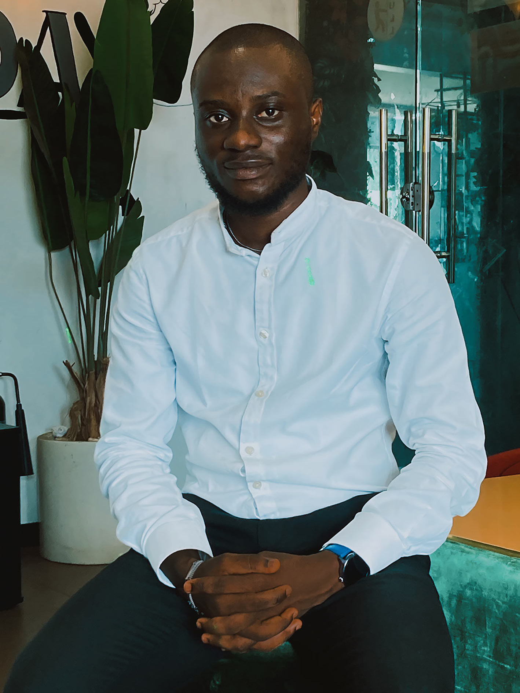

About Me

Who I Am
I'm Detumo Alex, a BSc Software Engineering student at Miva Open University, based in Lagos, Nigeria. My core focus is backend development — building reliable APIs, working with databases, and connecting systems that actually hold up under real use.
What I Have Worked With
- Node.js & Express
- MongoDB & PostgreSQL
- React & Next.js
- TypeScript
- Git & GitHub
Beyond the Code
Alongside my studies, I work as a Stock Manager at a retail supermarket in Lagos. That role has given me a practical lens for the tools I build — I understand operations, inventory, and the day-to-day friction that software is supposed to solve, not just the theory of it. I'm also a Microsoft Learn Student Ambassador.
Career Aspirations
I'm working through a structured backend engineering path covering everything from fundamentals to infrastructure and deployment. My goal is to grow into a backend/full-stack engineering role where I can build systems that hold up under real-world use, while applying what I learn to real projects like the ones on this site.
Hobbies & Interests
- Building side projects
- Reading tech & product blogs
- Retail & operations strategy
Academic Snapshot
| Detail | Information |
|---|---|
| Institution | Miva Open University |
| Program | BSc Software Engineering |
| Status | Currently Enrolled |